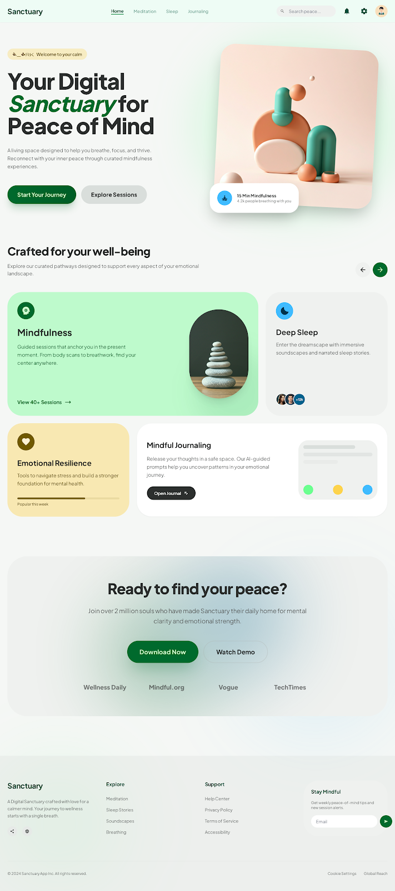
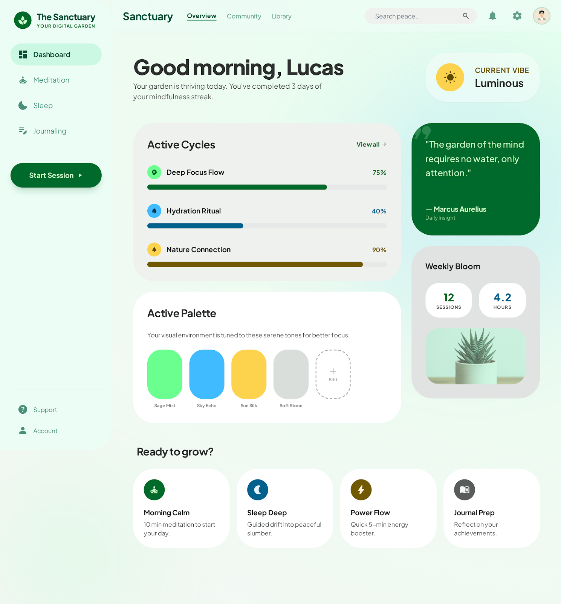
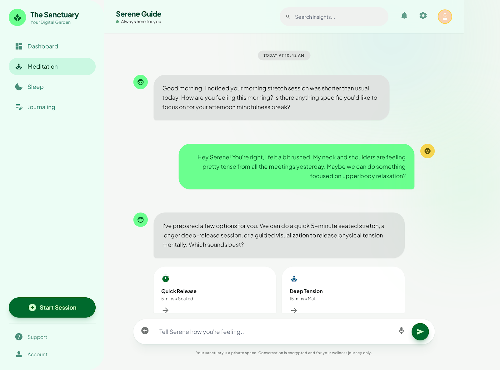

Nova identidade visual proposta
Posicionamento
Mais autoridade sem perder proximidade. A marca passa a parecer segura, atual e intencional.
Sensação
Ambiente suave, vivo e respirável, com camadas orgânicas em vez de blocos rígidos.
Diferenciação
Uma estética própria, feminina e madura, evitando a aparência “template”.
Monetiza com Elas como um ecossistema acolhedor, confiante e memorável.
Esta proposta traduz a marca em uma experiência visual mais premium, leve e humana. A direção criativa combina sofisticação editorial, atmosfera de cuidado e uma presença digital que foge do visual genérico de plataformas tradicionais.

Conceito criativo
A base da proposta é transformar a experiência da marca em um espaço digital que acolhe, orienta e inspira ação. Em vez de uma interface fria, criamos uma presença com ritmo, respiro e personalidade.
Acolhimento premium
Clareza visual com sensação de cuidado, combinando suavidade com acabamento sofisticado.
Formas orgânicas
Bordas generosas, volumes suaves e assimetria controlada para deixar a marca mais viva.
Leitura editorial
Títulos fortes e bem escalados ajudam a marca a parecer mais autoral e menos utilitária.
Leveza funcional
A interface continua prática, mas agora com uma camada emocional que fortalece percepção de valor.
Paleta e atmosfera
A paleta foi construída para equilibrar frescor, confiança e calor humano. O verde lidera a marca, o amarelo adiciona energia e o azul cria sensação de fluidez e clareza.
Em vez de divisórias duras, a separação entre blocos acontece por mudança tonal. Isso faz a interface parecer mais limpa, sofisticada e natural.
Os gradientes e brilhos suaves trazem identidade sem poluição visual, valorizando o conteúdo principal.
Tipografia e linguagem
A tipografia escolhida, Plus Jakarta Sans, entrega um equilíbrio muito interessante: moderna, amigável e segura. Ela sustenta um posicionamento mais profissional sem perder a delicadeza da marca.
Uma voz visual clara, feminina e confiante.
O uso de títulos maiores, com contraste forte e espaçamento bem resolvido, cria percepção de marca mais forte e melhora a memorização.
Headline
Impacto editorial para apresentar proposta, direção e diferenciação.
Texto corrido
Leitura confortável, leve e organizada para manter proximidade com o público.
Microcopy
Labels e apoios discretos, sem competir com a mensagem principal.
Aplicação da identidade
A força da proposta aparece quando a identidade se adapta com consistência em diferentes contextos. Abaixo, a mesma linguagem visual aplicada em navegação, gestão de conteúdo e interação.
Observação de escopo
A landing page apresentada aqui funciona como demonstração de como a nova identidade pode ganhar vida em um ponto de contato comercial. O desenvolvimento de uma landing completa não faz parte do escopo atual e pode ser contratado como etapa adicional.
Landing principal
Primeiro contato mais aspiracional, com apelo emocional forte e estrutura de conversão mais elegante. Esta peça entra como visual de referência e pode ser desdobrada em projeto futuro.
Área interna
Dashboard com leitura leve, hierarquia clara e sensação de marca viva mesmo em conteúdo funcional. Alguns cards, métricas e composições entram aqui como apoio visual para demonstrar linguagem, ritmo e atmosfera da interface.

Experiência conversacional
O visual mantém acolhimento e confiança também em fluxos de troca, suporte e orientação.

Resumo estratégico
Em termos de percepção, esta identidade move a marca para um território mais autoral, desejável e coerente com uma experiência premium.
A nova direção visual aumenta a sensação de qualidade e cuidado em cada ponto de contato.
A estética foge do padrão previsível e cria uma assinatura visual própria para a marca.
O sistema visual funciona tanto em páginas institucionais quanto em áreas internas e produtos digitais.
Leitura correta da proposta
Esta apresentação prioriza direção visual e percepção de marca. Por isso, alguns elementos do dashboard foram usados como apoio visual para exemplificar composição, hierarquia e clima da interface, sem representar necessariamente uma definição final de funcionalidades ou conteúdo.